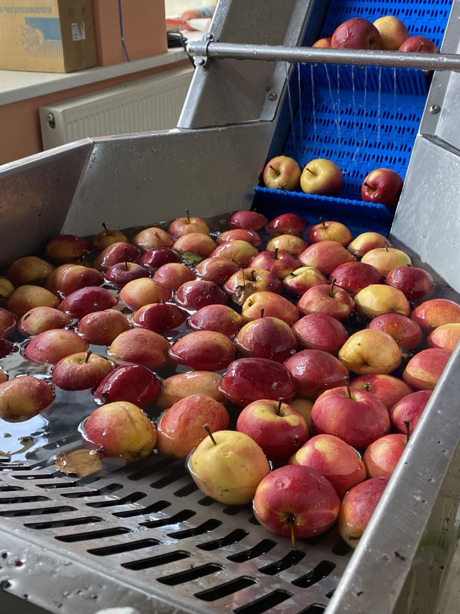
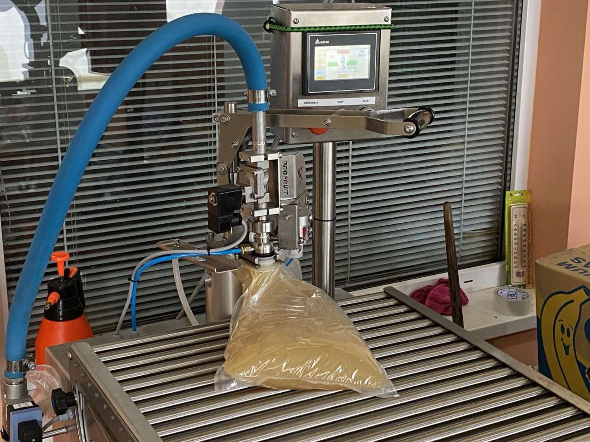

Трішки про нас
Усе починалося з малого бюджету, але з великого бажання створити власний бізнес
Коли в 2014 році наш батько оголосив, що ми починаємо цю справу, нам
важко було
в це повірити. Це здавалося ризикованим кроком, адже ми не мали
великого досвіду чи значного стартового капіталу. Проте була одна річ,
яка рухала нас уперед — безмежна любов до землі та віра в те, що праця
принесе плоди.


З часом ми зрозуміли, що ключ до успіху – це не боятися змін. Ми почали використовувати новітні методи догляду за рослинами, вкладали кошти в якісне обладнання, шукали кращі сорти. І головне – не припиняли вірити в нашу справу.